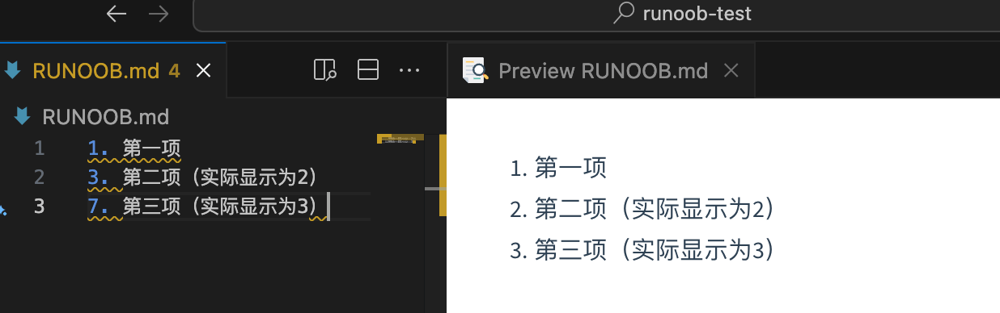
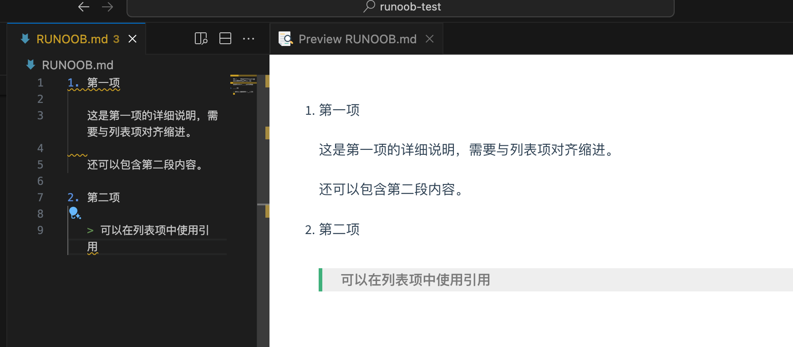
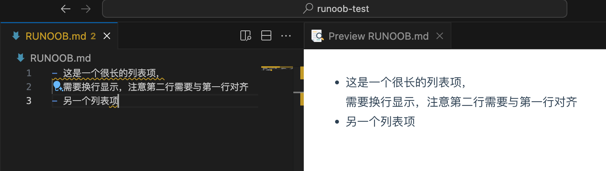

Listas Markdown
Soporte de MarkdownLista ordenadayLista desordenada。
Lista desordenada
Las listas desordenadas usan asteriscos (*), signos más (+) o signos menos (-) como marcadores de lista. Después de estos marcadores se debe agregar un espacio y luego escribir el contenido:
* Primer elemento * Segundo elemento * Tercer elemento + Primer elemento + Segundo elemento + Tercer elemento - Primer elemento - Segundo elemento - Tercer elemento
El resultado se muestra a continuación:

Consejos de selección:
- Se recomienda usar de forma uniforme el signo menos-, porque es visualmente más claro
- Mantén un estilo de marcado consistente en el mismo documento
- Debe haber un espacio después del símbolo de marcado
Lista ordenada
La lista ordenada se utiliza para mostrar pasos o elementos que requieren un orden.
La lista ordenada usa números y se agrega un.punto, por ejemplo:
1. 第一项 2. 第二项 3. 第三项
El resultado se muestra a continuación:

Los números pueden no ser consecutivos
Markdown corrige automáticamente el orden de los números:
1. 第一项 3. 第二项（实际显示为2） 7. 第三项（实际显示为3）

Comenzar desde un número específico:
5. 第五项 6. 第六项 7. 第七项

Listas anidadas
Consejos para anidar listas
Las listas se pueden anidar para crear estructuras de varios niveles:
Anidación de listas desordenadas：
- Frutas
- Manzana
- Manzana roja
- Manzana verde
- Plátano
- Naranja
- Verduras
- Zanahoria
- Col china
Anidación de listas ordenadas：
1. 准备阶段 1. 收集资料 2. 制定计划 2. 执行阶段 1. 开始实施 2. 监控进度 3. 总结阶段
Anidación mixta：
1. 主要任务
- 子任务A
- 子任务B
1. 详细步骤1
2. 详细步骤2
- 子任务C
2. 次要任务
Para la anidación mixta de listas, solo agrega dos o cuatro espacios antes de los elementos de la sublista:
1. 第一项：
- 第一项嵌套的第一个元素
- 第一项嵌套的第二个元素
2. 第二项：
- 第二项嵌套的第一个元素
- 第二项嵌套的第二个元素
El resultado se muestra a continuación:

Reglas de anidación：
- La sublista debe tener una sangría de 2 a 4 espacios (se recomiendan 2)
- Mantén una longitud de sangría consistente
- Se puede anidar en un número ilimitado de niveles, pero se recomienda no superar los 3 niveles en la práctica
Lista de tareas (lista de casillas de verificación)
La lista de tareas es una función extendida del Markdown estilo GitHub, y ahora cuenta con un amplio soporte:
Sintaxis básica：
- [ ] 未完成的任务 - [x] 已完成的任务 - [ ] 另一个未完成的任务
Efecto de renderizado:

Ejemplo de aplicación práctica：
## 项目待办清单 ### 设计阶段 - [x] 需求分析 - [x] 原型设计 - [ ] UI 设计 ### 开发阶段 - [ ] 前端开发 - [x] 页面布局 - [ ] 交互功能 - [ ] 响应式适配 - [ ] 后端开发 - [ ] 数据库设计 - [ ] API 开发 - [ ] 性能优化 ### 测试阶段 - [ ] 单元测试 - [ ] 集成测试 - [ ] 用户验收测试

Consejos de uso：
- El espacio y la "x" dentro de los corchetes son muy importantes:
[ ]y[x] - Se puede combinar con listas anidadas
- Es especialmente útil en la gestión de proyectos, planes de estudio y listas de la vida cotidiana
- Algunos editores admiten hacer clic en la casilla de verificación para cambiar su estado
Técnicas avanzadas de listas：
Elementos de lista con múltiples párrafos de contenido：
1. 第一项 这是第一项的详细说明，需要与列表项对齐缩进。 还可以包含第二段内容。 2. 第二项 > 可以在列表项中使用引用

Saltos de línea en elementos de lista：
- Este es un elemento de lista muy largo, que necesita un salto de línea; ten en cuenta que la segunda línea debe estar alineada con la primera - Otro elemento de lista

Al dominar esta sintaxis básica, ya podrás crear documentos Markdown con una estructura clara y un formato estandarizado. Estos son los elementos de sintaxis más utilizados en la escritura diaria; dominarlos mejorará en gran medida tu eficiencia al redactar documentos.
Otras extensiones